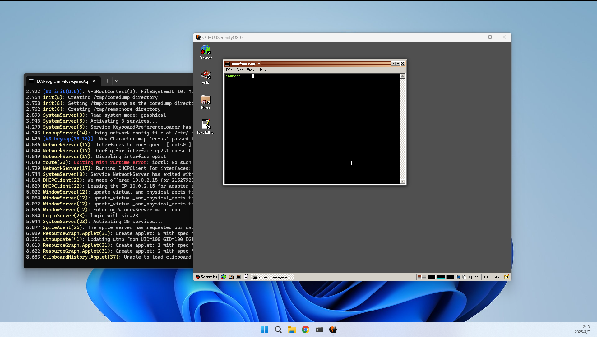

在WSL2上运行SerenityOS
文章目录
为什么要在WSL2上玩SerenityOS
我之前是在我一台 Ubuntu20.04 上的开发机上编译 SerenityOS 的。不过想好好玩一下 SerenityOS 还是想直接在自己的笔记本上编译。 但我的笔记本是 Windows11，直接编译不行，要通过 WSL2 来跑一个Linux来编译。
这是官网写的教程链接。 跟着教程做能解决大部分问题。不过我其中还是遇到一些疑问和问题。趁着还记得，在这里进行一下安装过程的记录。
WSL2运行Linux
运行Ubuntu
SerenityOS 支持在 WSL2 进行编译运行。在我的 WIndows11 笔记本上，安装 WSL2 也很简单。
- 打开控制台运行 WSL 并指定为版本2
|
|
- 查看可用版本并安装
|
|
或
|
|
安装并运行，这里我安装最新 Ubuntu-24.04
|
|
这样应该就可以运行器一个 WSL2 的 Ubuntu 系统
把Ubuntu系统迁移到其它位置存储
默认 WSL2 放在C盘，虽然我为C分配了足够大的空间。但 Windows 系统的C盘容量，永远都让我焦虑，所以我 尽量不把不可控大小的文件放在C盘:)。
- 先停止 WSL
|
|
- 导出当前系统
|
|
- 取消注册当前的发行版
|
|
- 把系统放到其它地方
|
|
现在可以把 tar 删除了。
- 运行虚机
|
|
安装依赖
安装依赖和普通的 Linux 一样，主要是要注意使用 Linux 版本最好和官方教程中的一样。 这样可以避免很多问题
|
|
编译 SerenityOS
- 下载代码
尽量把文件放在Linux系统中，而不要放在 Windows 系统中，通过特定路径在 Linux上 访问。因为文档说这样读写文件会很慢。
|
|
- 编译工具链
|
|
这里碰到一个问题，就是编译中会从https://web.archive.org/web/99991231235959id_这个地址去下载一些源码。
这是美国的数字档案馆的网址，我原来挂日本的梯子居然访问不了，很神奇，换了美国的梯子就正常了。
- 编译SerenityOS
|
|
编译比较耗时，但如果依赖都正常，应该编译没什么问题。
运行 SerenityOS
如果直接用X来转发界面，用 Linux 的 qemu 做存软件模拟，会非常的慢。可以借助 Windows 的 HyperV 技术来做模拟。 需要安装 Windows 版本的 qemu下载地址
这里很神奇，我开头以为是在 Linux 中编译，然后把编译出来的镜像，用 Windows 的 qemu 选择这个镜像来运行。
但直接在 Linux 中执行Meta/serenity.sh run就会自动打开 Windows 的 qemu 来运行，很神奇。暂时不知是怎样做到的。
最后运行成功，可以在自己的笔记本上探索SerenityOS了。 
文章作者 hao
上次更新 2025-04-06